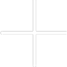

<app-timer-counter (isUserCheckedIn)="viewState($event)" class="app__timer-controller"> </app-timer-counter>

<div class="header-container">
  <h1 class="text-1_semibold">Tracking</h1>
</div>

<ng-template #notask>
  <div class="div__tracking-notask">
    <h3 class="text-3_medium p-3" style="color:var(--turqoise-color); text-align: center;"> Please check in before
      beginning a
      task </h3>
    <div class="div__tracking-begin pt-3 pb-5">
      <p class="text-5_regular p-3 div__tracking-notasktext" style="text-align:center;"> No task in progress </p>
      <button mat-raised-button (click)="openModal()" [disabled]="!checkInStatus" class="button-add">
         </button>
    </div>
  </div>
</ng-template>


<app-timer-visual *ngIf="checkInStatus && hasAddedTask else notask"> </app-timer-visual>

<div class="main-container">
  <div class="main-container__table-margin">
    <div class="header-container">
      <h2 class="text-2_semibold">Tasks Done</h2>
    </div>
    <app-tasks-done></app-tasks-done>
  </div>
</div>
